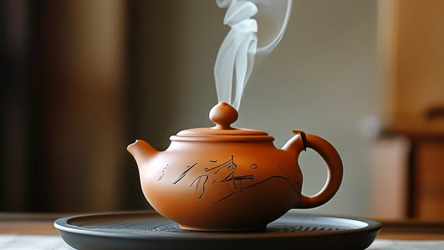
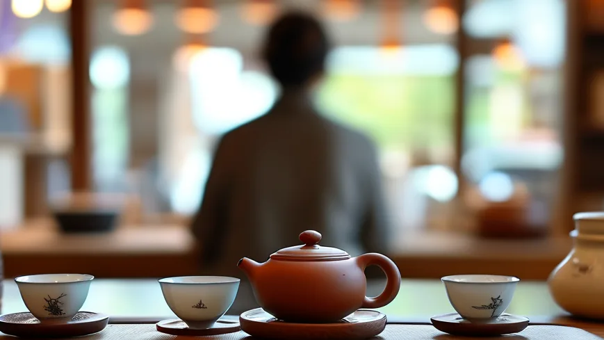
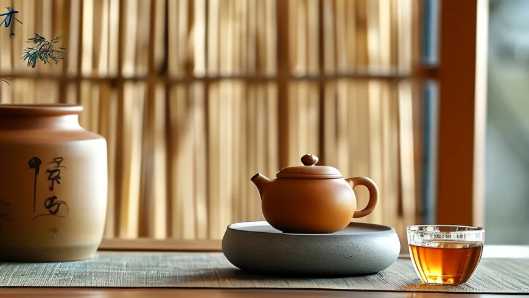
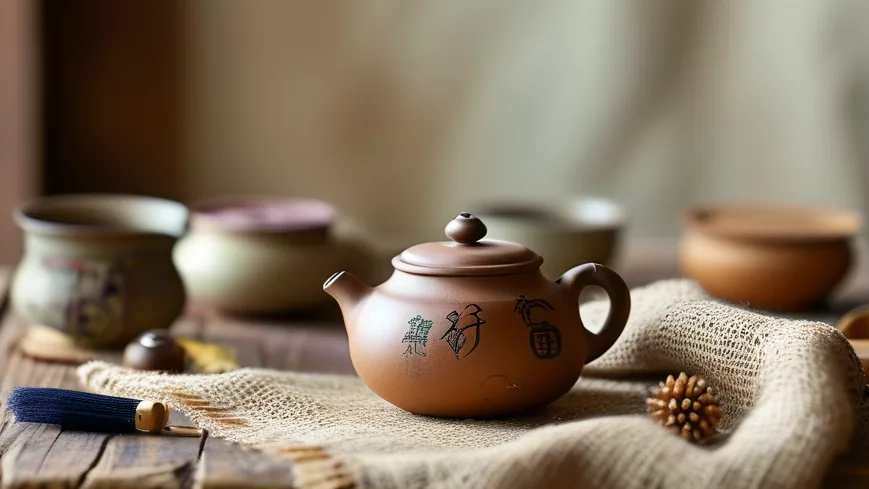
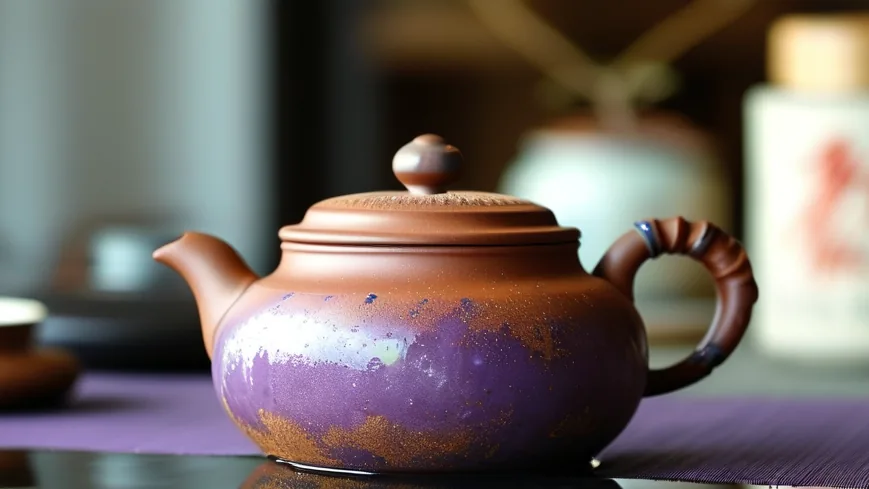
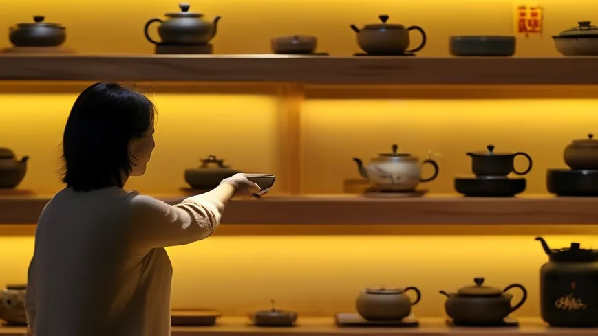

阿凤姐点评紫砂新闻：好戏好物融入日常——这是我在店里被问得最多的一件事。📌 好戏好物融入日常，“苏”式文化产品这样走进巷陌烟火|昆曲|紫砂|艺术|非遗|周雪峰|折子戏|。——阿凤姐的看法很直接：**非遗名录是给传承人发护照的，不是给商家贴金的。** 我把二十多年做凤凰单丛的经验，摊开讲给你听。
🌿 开篇问答
Q1：紫砂壶上印的名字，到底能信几分？
「传承人这三个字，在宜兴是有一套评定规矩的。正高级工艺美术师、省级传承人、市级传承人，每一档都有公示名单，官网能查、编号能对。查不到的，就得留个心眼。」
Q2：想当面问、当面喝，去哪儿找阿凤姐？
来 阿凤姐茶叶店（惠州凤凰茶业），就在惠州东平东湖花园沿江商铺，导航搜索「凤凰茶业」即可。批发零售都做，可以先来喝一杯再定——详细地址、电话和营业时间见文末。
Q3：怎么一眼看出一泡茶的好坏？
阿凤姐教你三看：条索匀不匀、汤色透不透、叶底活不活。三样都过，才谈香气。
今天碰上的这件新鲜事
📌 好戏好物融入日常，“苏”式文化产品这样走进巷陌烟火|昆曲|紫砂|艺术|非遗|周雪峰|折子戏|。——阿凤姐的看法很直接：非遗名录是给传承人发护照的，不是给商家贴金的。

📰 非遗名录这边有动静
2026-11-25 ｜ 好戏好物融入日常，“苏”式文化产品这样走进巷陌烟火|昆曲|紫砂|艺术|非遗|周雪峰|折子戏|传统文化_网易订阅
“比如剧院每周有折子戏，每月轮换大戏，票价走公益推广路线，像‘菜单’一样供观众挑选，让昆曲变成日常可及的文化选择。”在他看来，丰富演出形式、拓展欣赏场景，能让不同年龄、不同欣赏基础的观众找到走近昆曲的入口。 短视频、直播等传播形式，也在他的关注之中。“剧院容量有限，但手机屏幕没有边界。先让大家看见、了解，才愿意走进剧场。” 谈及下一步，周雪峰表示，将继续推动昆曲进校园、拓展园林实景演出，并借助短视频等传播形式，让更多人看见昆曲、走近昆曲。
来源：https://www.163.com/dy/article/LCK84SC9053469KC.html

💬 牌子挂上之后，钱花在哪
阿凤姐把这条消息读了两遍，指着其中一句说：「“比如剧院每周有折子戏，每月轮换大戏，票价走公益推广路线，像‘菜单’一样供观众挑选，让昆曲变成日常可及的文化选择。」——这句她认。
「非遗保护护的是什么？是种泥的人、做壶的手、喝茶人的口碑。不是护那张证书，更不是护某个牌子能卖多贵。」
「我做茶二十多年，见过太多『非遗传承人』挂牌子卖货：泥料不管、工序不懂、讲故事倒是一把好手。真正的传承，是每天在泥凳前坐八小时。」
「入选名录对地方是好事，说明这门手艺有人管了。但买家别把名录当质量保证——名录管的是手艺存续，不管这把壶好不好用。」
她说自己的标准很土：「手艺要看它现在还活着没有。名录是过去的事，今天还在泥凳前坐着的人，才是传承。」

🔍 顺带说清：冬天为什么先温壶
紫砂导热慢，骤冷骤热容易惊裂，尤其朱泥。冬天先温水淋一遍再冲茶，是保护壶，也是保护茶。
「一把裂了的壶，都是这么来的——这话我讲了二十多年。」阿凤姐说，冬天先温水淋一遍再冲茶，尤其朱泥，防惊裂。

🔍 另一个常被问的：石瓢壶的三角骨架
石瓢上小下大、桥钮直嘴，重心低，看着拙其实稳。壶身近梯形，出汤利落，泡单丛这种高香茶不容易闷。
「很多人把它想复杂了。」她说，石瓢要挑重心低的，装满水也不头重脚轻；桥钮要正，倒水时壶盖不晃。

✅ 非遗入选之后，买壶人要留心的四件事
一、名录是参考不是保证。 入选非遗说明手艺有传承体系，不代表每把壶都是精品，仍要看成色和做工。
二、关注产区特点。 不同产区泥料、器型、烧成习惯都不同；喜欢哪种风格就认那个产区，别只看标签。
三、支持真手作。 愿意为手工多付钱是好事，但要付给真正动手的人，而不是付给一个名号。
四、日常用壶别追非遗款。 非遗款多有溢价；日常泡茶选泥料正、出水顺的普通款，性价比高得多。
🍵 店里能做什么：凤凰单丛全系列、紫砂壶现场试泡；带自己的茶来，免费帮你试壶、看壶、教你怎么养。

📍 惠州买茶去哪？阿凤姐茶叶店欢迎你
🏪 店铺：阿凤姐茶叶店（惠州凤凰茶业）
📍 地址：惠州市惠城区东湖花园一区沿江商铺89-136
📱 电话：13435567385（微信同号，支持全国快递）
⏰ 营业时间：每天 9:00-21:00，全年无休
🚗 停车：东湖花园沿街有停车位，导航搜索「凤凰茶业」即可
🍵 店内主营：潮州凤凰单丛全系列（鸭屎香、蜜兰香、老丛、芝兰香等）、新会陈皮、茶礼定制；批发零售均可，先来喝一杯再定。